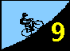
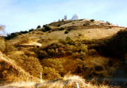
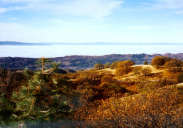
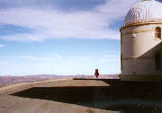
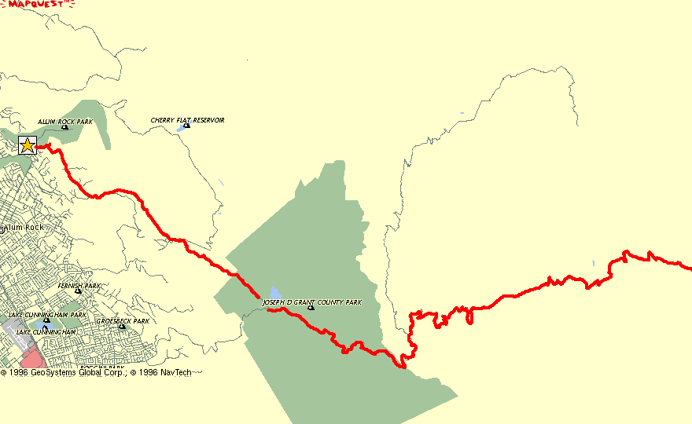

|
||||||||||||||
Upward, further, higher.... you're having trouble remembering what it feels like to not be climbing. Does the summit exist? Will it ever arrive? Why are you here? Why did you come? You could be home watching football right now...
 Finally, ahead, you see it. The observatory -- your goal. There is an end to the pain... there will be an end to the suffering.
Yes -- you're almost there.
Only five miles to go...
This is the finale of the 1996 Low-Key Hillclimb Series. We've saved the longest for last -- 19 miles and 4300 vertical feet....more climbing than any 2 other hills in the series combined, neglecting Diablo.
 If you are riding to survive, just pace yourself and contemplate the views of the valley below. When shrowded in fog, the valley is an eerie and beautiful sight. When clear, the expansive views of San Jose and the surrounding Silicon Valley are..... well.... a matter of taste.
If you are riding to go fast, though, you will need to stay totally focused on the task at hand. Always, you are pushing yourself, tempting your threshold of pain, probing your sustainable limits. Stay relaxed, focus on breathing, focus on pedalling, focus on the rider ahead.... To achieve your goal, to produce your best time, you need to constantly focus.... probe,.... push... for all 19 miles of the seemingly endless road.
 But when you arrive at the observatory, the pain will be forgotten, but the achievement will remain. Absorb the view to the east in the company of your fellow cyclists...while your neighbors are watching others achieve on their televisions, you are achieving on your own.
When's dinner?
Check out the Lick Observatory home page, which includes an excellent photo tour of Mount Hamilton and the climb from San Jose! (the photos on this page are pointers to images from the site.)
| Distance: | 19 miles (gasp!) |
| Climbing: | 4300 feet |
| Format: | mass start |
| Start: | the intersection of Alum Rock Avenue and Mount Hamilton Road in San Jose |
| Directions: | Check out the interactive Yahoo map! |
| Finish: | The Lick Observatory parking lot. |
| Reg Time: | 10:00 am to 10:20 am |
| Start Time: | 10:30 am |
| Fee: | 3 bucks |
| Weather: | 54F at start, 46F at finish. Misty at start and near and on summit. Cold wind throughout. |
| Map: |  |
djconnel@flash.net
{kind=link}
{kind=link}